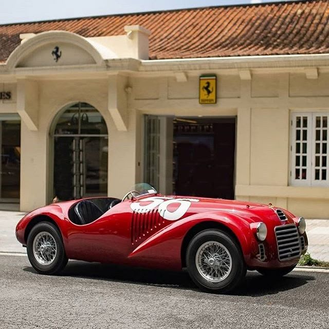
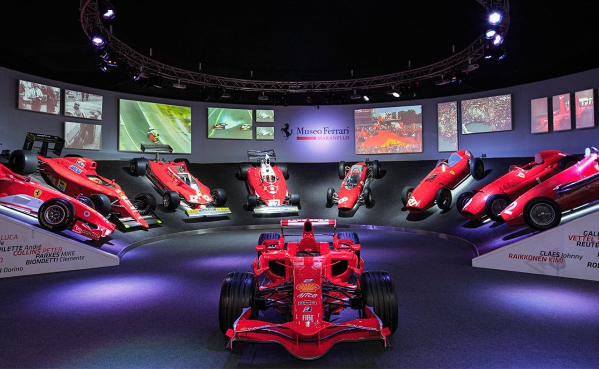

Bem vindo à história da Ferrari
A história da Ferrari é um testamento à paixão, inovação e busca incessante pela excelência. Fundada por Enzo Ferrari em 1929 como Scuderia Ferrari, a empresa inicialmente se dedicava a organizar e patrocinar pilotos e carros de corrida. Somente em 1947 o primeiro carro de rua, o 125 S, ostentou o icônico Cavallino Rampante, marcando o nascimento da lendária fabricante de automóveis.
Sobre a Ferrari

A Ferrari foi fundada em 1939 por Enzo Ferrari, inicialmente como Auto Avio Costruzioni, em Modena, Itália. A empresa produziu seu primeiro carro, o 125 S, em 1947, marcando o início de uma trajetória lendária. Enzo, um ex-piloto de corridas, tinha como objetivo construir os melhores carros de corrida do mundo, e sua visão rapidamente se concretizou com vitórias em competições como a Fórmula 1 e Le Mans.
A Ferrari se tornou sinônimo de luxo, desempenho e design inovador. Seus carros, como o icônico 250 GTO e o moderno LaFerrari, são obras-primas de engenharia e estética. A empresa também é conhecida por sua equipe de Fórmula 1, a Scuderia Ferrari, que conquistou inúmeros títulos mundiais, com pilotos lendários como Michael Schumacher e Niki Lauda.
Hoje, a Ferrari continua a ser uma referência em inovação automotiva, combinando tecnologia de ponta com a paixão que Enzo Ferrari incutiu na marca. Sua missão é oferecer experiências únicas de condução, enquanto sua visão é manter-se como líder no mercado de carros de luxo e de corrida. Seus valores – excelência, tradição e inovação – são refletidos em cada veículo que deixa a fábrica em Maranello.
Localização
O Museu Ferrari, localizado em Maranello, Itália, é um santuário dedicado à história, à engenharia e à paixão por uma das marcas de automóveis mais icônicas do mundo. Fundado para celebrar o legado de Enzo Ferrari, o museu não apenas exibe carros lendários, mas também conta a história de como a Ferrari se tornou sinônimo de velocidade, luxo e excelência automotiva. Inaugurado em 1990, o museu foi criado para preservar e compartilhar o patrimônio da Ferrari. Em 2004 e 2017, passou por grandes reformas, transformando-se em um espaço moderno e interativo. Hoje, recebe mais de 400.000 visitantes por ano, entre fãs de carros, entusiastas de Fórmula 1 e turistas do mundo todo.